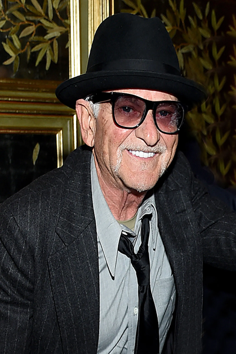

Martin Scorsese

Martin Scorsese Oscar-díjas olasz-amerikai filmrendező, a filmművészet egyik legelismertebb alkotója.
See ProfileRobert de Niro

Robert De Niro kétszeres Oscar-díjas dél-olaszországi albán származású amerikai színész, producer és rendező.
See ProfileSharon Stone

Sharon Vonne Stone Emmy (Ügyvédek - 2004) - és Golden Globe-díjas (Casino - 1996) amerikai színésznő.
See ProfileJoe Pesci
Joseph Frank Pesci Oscar- és BAFTA-díjas olasz származású amerikai színész, humorista, énekes és zenész.
See Profile